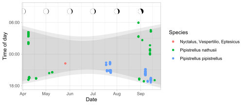

Splits observations with datetime stamps into date and time of day components, then displays them in a scatter plot using grammar of graphics (ggplot2). Plots can also be decorated with coloured ribbons indicating night time. This is helpful for visualising data that are associated with the solar cycle, such as bat activity.
Installation
Install CRAN release:
install.packages("gghourglass")Install latest developmental version from R-Universe:
install.packages("gghourglass", repos = c('https://pepijn-devries.r-universe.dev', 'https://cloud.r-project.org'))Example
## load required namespaces
library(ggplot2)
library(lubridate)
library(gghourglass)
## get example data
data(bats)
## subset example date to the year 2018
bats_sub <- subset(bats, format(RECDATETIME, "%Y") == "2018")
## retrieve monitoring location
lon <- attr(bats, "monitoring")$longitude[1]
lat <- attr(bats, "monitoring")$latitude[1]
## plot the data
ggplot(bats_sub, aes(x = RECDATETIME, col = SPECDESCSCI)) +
## annotate sunset until sunrise
annotate_daylight(lon, lat, c("sunset", "sunrise")) +
## annotate dusk until dawn
annotate_daylight(lon, lat, c("dusk", "dawn")) +
## add hourglass geometry to plot
geom_hourglass() +
## add lunar phase annotation
annotate_lunarphase(NULL, lon, lat, radius = grid::unit(2, "mm")) +
## extend y-scales to fit lunar phase annotation
scale_y_datetime(limits = as_datetime(c(period(-6, "hour"),
period(+9, "hour")))) +
## add informative labels
labs(x = "Date", y = "Time of day", col = "Species")
Code of Conduct
Please note that the gghourglass project is released with a Contributor Code of Conduct. By contributing to this project, you agree to abide by its terms.